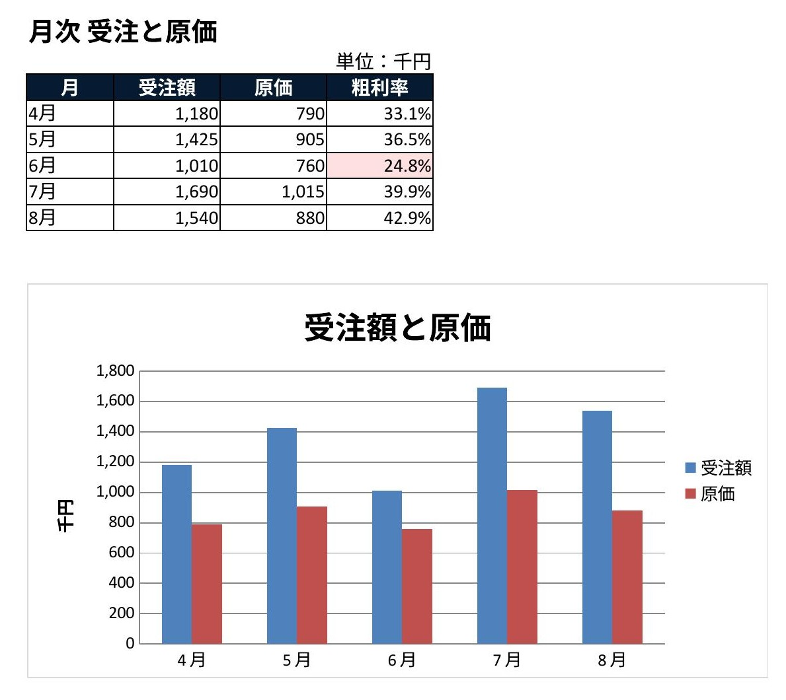
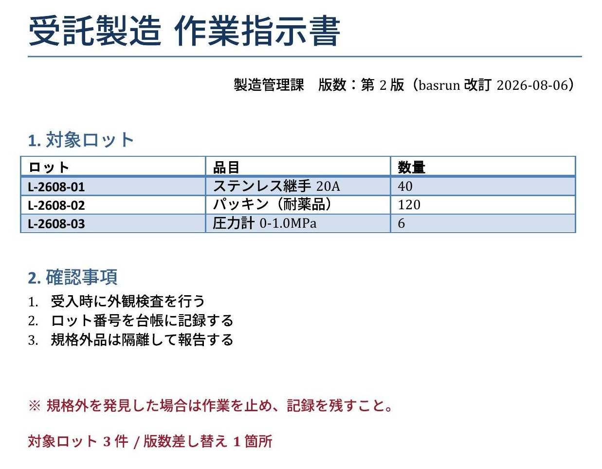
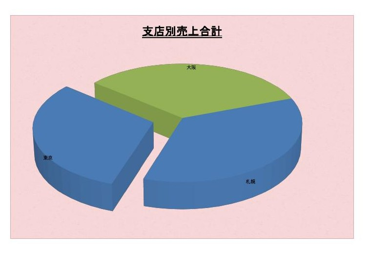

PLAIN-TEXT BASIC, RUN AGAINST DOCUMENTS THAT CANNOT STORE MACROS
Microsoft Office は要りません。文書の形式はそのままに、 中身だけを機械で処理します。ソースは平文なので差分が読めます。
道具もこのページも AI が書き、AI が描画して確かめました。 根拠は視覚 QA と確認していないことに書いてあります。
u = oSheet.getCellByPosition(2, i).getValue() q = oSheet.getCellByPosition(3, i).getValue() oSheet.getCellByPosition(4, i).setValue(u * q) total = total + u * q
| 1,280 | 40 | 51,200 | |
| 340 | 120 | 40,800 | |
| 95 | 500 | 47,500 | |
| 8,600 | 6 | 51,600 | |
| 720 | 80 | 57,600 | |
| 合計 | 248,700 |
たとえば、こういう場面です。
「この見積、金額と合計を入れて今日中にお願いします。
毎月同じ形で来るので、来月からも」
.xlsx。マクロは 1 バイトも入っていないこの依頼は、渡されたファイルが .xlsx だと素直には成立しません。
.xlsx は仕様としてマクロを格納できないからです（マクロは .xlsm 側）。
VBA を書けるかどうかではなく、書いたものの置き場所がないという形で詰まります。
そして逃げ道は 3 つとも、何かを諦めることになります。
.xlsm に変換する。相手の運用を変えることになり、受け入れられないことがある。
計算結果だけ埋める。再実行できず、式も残らない。次に数字が変われば作り直し。
手作業に戻す。枚数や月数に比例して時間が増える。来月も同じだけかかる。
3 つとも、技術的な限界ではありません。 できない理由が仕様に書いてあるので、そこで止まりやすいだけです。 止まっているのは 格納 の側であって、実行 の側ではありません。
格納できないだけで、実行できないわけではありません。
ソースを実行時に Basic ライブラリへ流し込めば、文書は普通の .xlsx のまま処理できます。
# ソースは平文のまま。文書には一切埋め込まない python basrun.py apply book.xlsx src MyLib Amount.FillAmounts --backup # 文書に埋まってしまったマクロを、平文へ救出することもできる python basrun.py pull rescued Standard --book legacy.ods
回り道した先のほうが、本来の形として優れています。
文書内の XML に埋まる
実質できない
マクロを持てる形式のみ
文書
git diff が読める
通常のコードレビュー
.xlsx .pptx .docx 共通
ソース（実行時のキャッシュ）

別の .xlsx ― 粗利率と % 書式は basrun が入れ、グラフと条件付き書式は生成時に。Excel は使っていない
文字列が正しいことと、読める状態であることは別です。 「うまくいきました」と表示するコードは、うまくいかなくてもそう表示します。 だから出来上がりを描画し、目で確かめてから完了とします。
値だけなら CSV に落とせば読めます。ですが CSV になった時点で、 結合・列幅・シートの構造は落ちます。座標そのものは数字として残っても、 見え方は残りません。グラフに至っては文字としての姿がないので、 書けているかどうかを読み返しで確かめる方法がありません。
| 文字として読める | 描画しないと分からない | |
|---|---|---|
| セル | 値・数式・座標 | 結合の見え方、列幅で切れた文字 |
| 書式 | 指定した規則 | その規則が当たった結果の色 |
| グラフ | 定義（XML） | そもそも出ているかどうか |
実際に踏みました。グラフの図形に 大きさが書かれておらず、グラフは存在するのに面積がゼロ ―― つまり 見えない状態になっていました。問い合わせれば「グラフ 1 個」と正しく返ります。 存在を確認する方法では、これは見つかりません。原因を 3 回続けて読み違え、 最後は「この描画系はグラフに対応していない」と道具の限界に帰着させました。 3 回とも外れです。描画して初めて、自分の生成物を疑えました。
basrun も、このページも、書いたのは AI です。
そして上の欠陥を見つけたのも、描画して見た AI 自身です。
soffice で PDF にし、画像にしてから読み返す経路を作りました。
この節の 2 枚も、上の月次表も、そうやって一度見てから載せています
.docx ― 版数の差し替えとロット件数の追記を basrun が実行

.xlsx ― 3-D グラフとテクスチャ。描画しなければ確認できない領域
文字列としては完全に正しい。読み返しでは絶対に出ない欠陥。
デザインシステムの色を名前で対応させ、載せる面の役割を落としていた。
横幅で設計して縦の寸法を使っていなかった。数値上は正しい配置。
必要なのは LibreOffice だけです。Microsoft Office は要りません。
Python は LibreOffice に同梱のものを使います（素の Python には uno が無いためです）。
ソースは平文の .bas。文書には一切埋め込まないので、そのまま git に置けます。
実行時にライブラリへ流し込み、処理して保存します。形式は .xlsx のままです。
「うまくいきました」の表示ではなく、出来上がりを目で確かめてから完了とします。
' ★ 文書は引数で受ける。ThisComponent に頼らない
Sub FillAmounts(oDoc As Object)
Dim oSheet As Object
oSheet = oDoc.Sheets.getByIndex(0)
...
End Sub
ThisComponent は使えません。
--headless で非表示に開いた文書は「現在のコンポーネント」ではないためです。
成功したように見えて、何も起きません ―
実測で「読み込んだ / 実行した / 保存した」と全部表示され、セルは 1 つも変わっていませんでした。
# 同期して、当てて、保存する（--backup で元を残す）
python basrun.py apply book.xlsx src MyLib Amount.FillAmounts --backup
起動する LibreOffice は専用プロファイルで隔離します。
利用者が画面で開いている LibreOffice を巻き込まないためです。停止も
taskkill ではなく、接続先だけを終了させます。
BASRUN_OFFICE / BASRUN_PROFILE / BASRUN_PORT で上書きできます。
確かめた範囲と、確かめていない範囲を分けて書きます。 聞かれてから答えるのと、先に書いておくのとでは意味が違うためです。
vbaProject.bin を含まない、通常の .xlsx であること
書き直す理由が無いものは書き直していません。組んで初めて出来ることのほうに時間を使っています。
―― 文書を開いて中のマクロを平文へ救出する --book は、
どちらの道具にも単体では無かったものです。